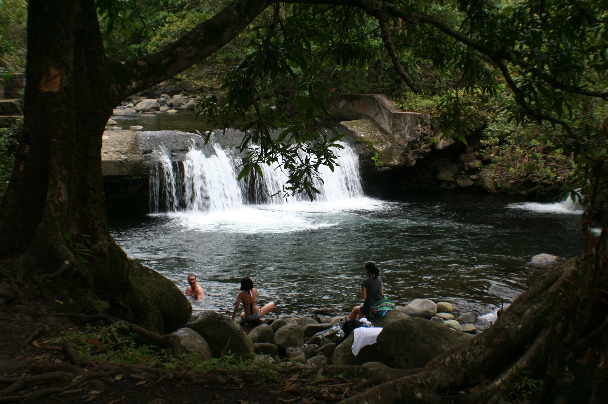

The Waihee River is a beautiful and scenic river on the island of Maui, Hawaii. It is about 10 miles long and drains an area of 16.6 square miles. The river originates from the slopes of the West Maui Mountains and flows through the lush and verdant Waihee Valley. Along the way, it forms several waterfalls, pools, and rapids that attract hikers, anglers, and kayakers. The river also supports a rich biodiversity of native plants and animals, such as the Hawaiian stilt, the Hawaiian coot, and the Hawaiian duck. The river is culturally and historically significant for the Native Hawaiians, who have used its water for irrigation, fishing, and spiritual practices for centuries. The river is also part of the Nā Wai ʻEhā, or the Four Great Waters, which are four streams that are considered sacred and essential for life in Maui. The Waihee River is one of the most pristine and natural rivers in Hawaii, and it offers a glimpse into the island’s beauty and heritage.